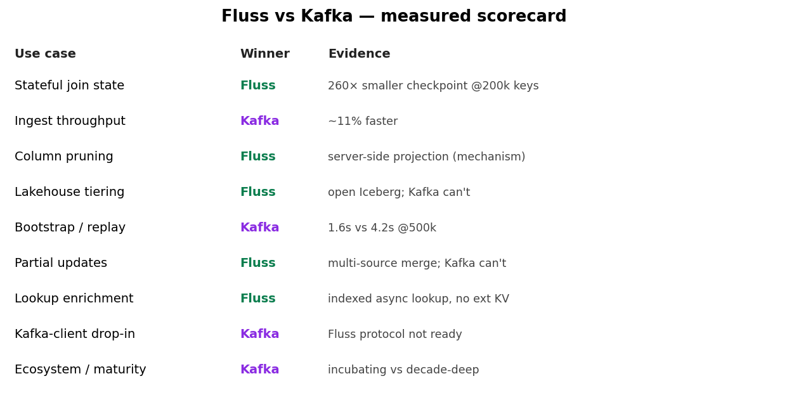
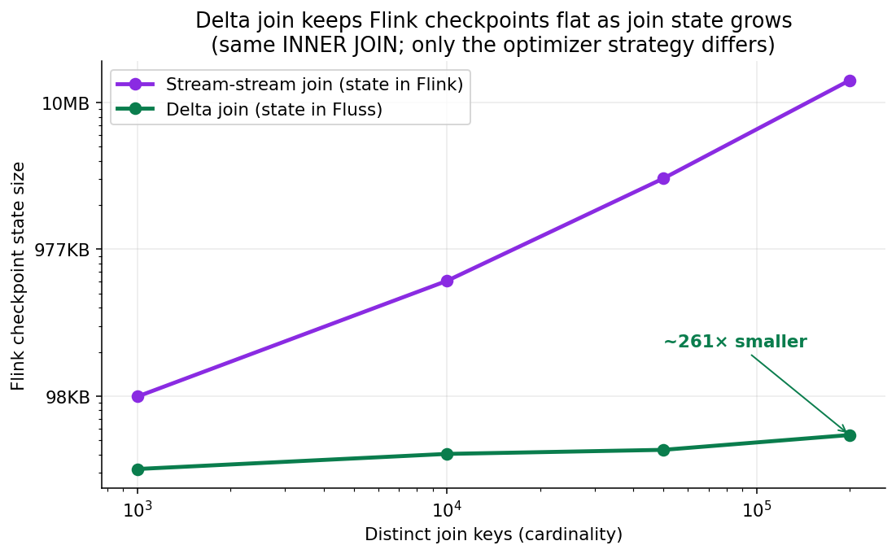
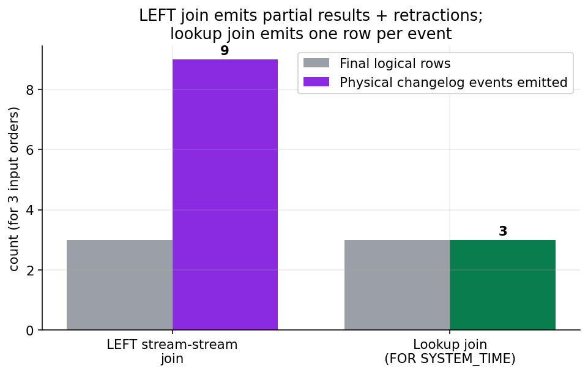
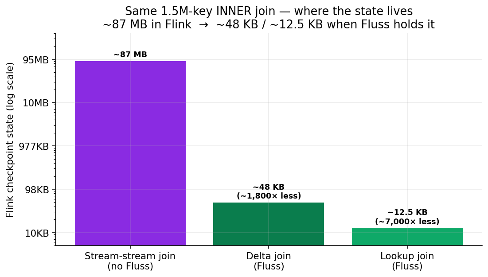
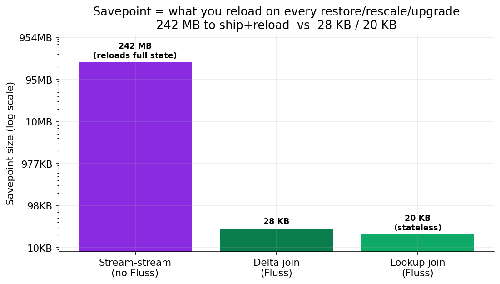
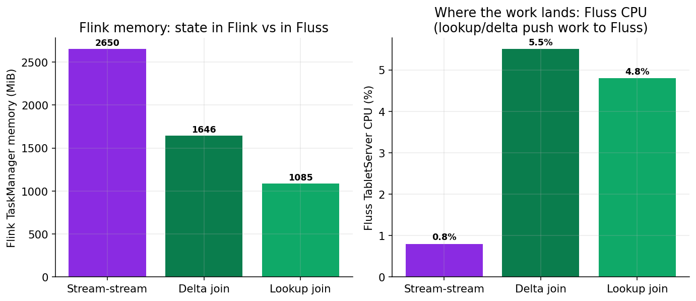
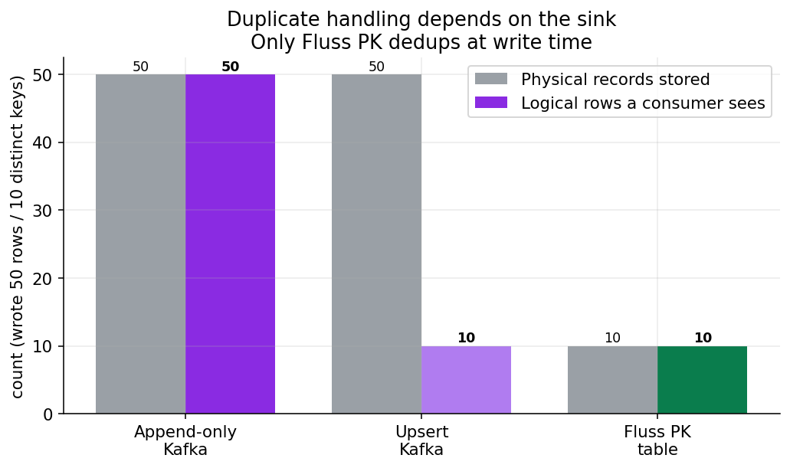
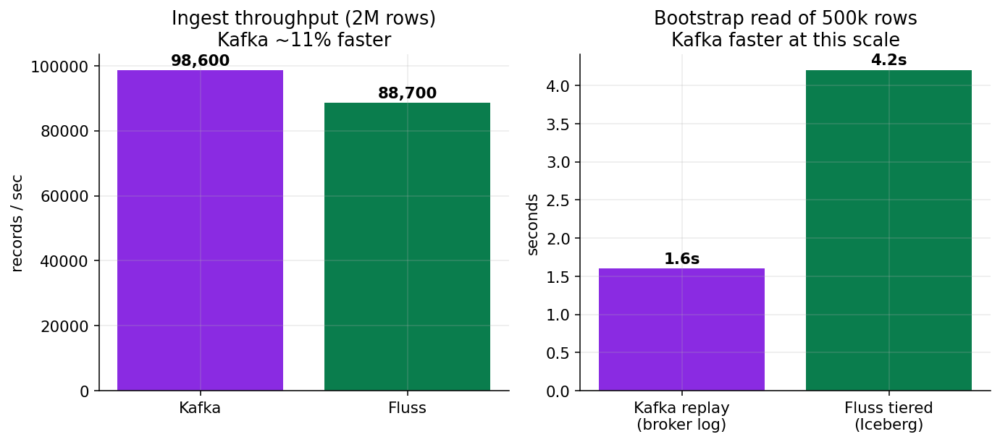

Is Apache Fluss a Kafka Killer? I Ran the Numbers with Flink 2.2
One question runs through this whole post: where does your Flink state live? Answer that, and you understand exactly when Fluss beats Kafka — and when it doesn't.
TL;DR
Fluss is not a Kafka killer. It's a streaming storage layer that is genuinely better than Kafka at one job — being the state and lookup tier for Flink — and clearly behind Kafka at being a general-purpose, polyglot event bus.
The thesis in one line: a Flink job holds its join and enrichment state in RocksDB; Fluss lets you push that state out of Flink and into an indexed table. I measured it on the same 1.5M-key join — Flink's checkpoint went from ~87 MB to ~48 KB, and the savepoint from 242 MB to 28 KB. Two Fluss features do this — delta join and lookup join — and they get equal billing here because they're the same idea with different tradeoffs.
But delta join is INNER-only, the duplicate rules are Flink's not Fluss's, Kafka still wins on raw ingest and replay, the Kafka-protocol bridge isn't usable yet, and Fluss is Apache incubating (I hit real bugs). Honest verdict: complement, not kill — adopt Fluss where Flink touches state; keep Kafka as the bus.

1. What Fluss actually is
Kafka is a distributed log: append opaque records, read them back in order. The broker doesn't know what's inside a record.
Fluss is streaming storage built for analytics and for Flink:
- Two table types — Log tables (append-only, like a Kafka topic) and PrimaryKey tables (updatable, with the PK as an index).
- Columnar on the wire (Arrow) — projection pushdown: ask for 2 of 30 columns and only those 2 leave the server.
- A lookupable index — because PK tables are indexed, Flink can do point/prefix lookups against them. This is the property the whole post hinges on.
- Lakehouse tiering — cold data tiers to Paimon/Iceberg/Lance, still queryable as one table.
Mental model: Kafka stores events; Fluss stores tables that happen to stream. And a table you can look up by key is a table that can hold someone else's state.
2. The one idea: where does your join state live?
Every stateful Flink join keeps its working set somewhere. A normal stream-stream join keeps both input sides materialized in Flink keyed state (RocksDB), so a late row on either side can still find its match. That state:
- grows with key cardinality, effectively unbounded;
- is copied into every checkpoint (slow checkpoints);
- must be reloaded on recovery (slow failover);
- dominates TaskManager memory.
Anyone who's run a big Flink join in production knows the symptoms: multi-GB checkpoints, minute-long checkpoint durations, painful restarts.
Fluss offers two ways to move that state out of Flink — because the other side already lives in an indexed Fluss table, Flink can look it up instead of storing it:
- Delta join — a dual-stream INNER join where each side looks the other up in Fluss.
- Lookup join — stream enrichment that looks a dimension up in Fluss at processing time.
The next two sections are these two pillars, equally weighted. Then §5 shows the shared payoff — checkpoints, savepoints, recovery — that both unlock.
3. Pillar 1 — Delta join (the dual-stream INNER join)
Delta join (Flink 2.1+, designed with Fluss) replaces "look up the other side from Flink state" with "look up the other side from the Fluss PK-table index." Both inputs are Fluss PK tables; each incoming row does a prefix-key lookup against the other.
I swept join-key cardinality and measured Flink's checkpoint state:

| Distinct keys | Delta join | Stream-stream join | Ratio |
|---|---|---|---|
| 1,000 | 31 KB | 97 KB | 3× |
| 10,000 | 39 KB | 595 KB | 15× |
| 50,000 | 42 KB | 2.97 MB | 71× |
| 200,000 | 53 KB | 13.8 MB | 261× |
Delta join stays flat (state is in Fluss); the stream-stream join grows linearly (state is in Flink) and the gap compounds to 261×.
The catch: it's INNER-only, and silently fussy
This is where demos mislead. Delta join engages only when all of these hold — miss one and the planner silently falls back to a stateful join (no warning, big checkpoints again). I pinned these down by forcing table.optimizer.delta-join.strategy=FORCE so the planner throws instead of degrading:
- Both inputs are Fluss PrimaryKey tables.
- The join key is the
bucket.keyand a prefix of the PK (e.g.ordersPK must be(user_id, order_id), not(order_id, user_id)). - Inputs are insert-only —
'table.merge-engine' = 'first_row'(or suppress deletes on a CDC source) so the changelog is[I]. - The join is INNER. LEFT/RIGHT/FULL OUTER are not supported — they fall back to a stateful stream-stream join.
- The query is a full
INSERT INTO <upsert-sink> SELECT … JOIN …(anEXPLAIN SELECTwith no sink never shows aDeltaJoin). - Fluss has one index per table (the prefix key) today — one join key to optimize on.
So if you need an outer join, delta join gives you nothing. That's the single biggest limitation — and why the next pillar matters just as much.
4. Pillar 2 — Lookup join (stream enrichment)
The more common shape isn't joining two streams — it's enriching a stream against a dimension (orders → user profile, clicks → product catalog). With Kafka you'd bolt on Redis/HBase, or hold the dimension in Flink state and replay a compacted topic to rebuild it on every restart. With Fluss, the dimension is an indexed PK table you look up directly:
SELECT o.order_id, o.user_id, u.name
FROM orders_kafka AS o
LEFT JOIN users_fluss FOR SYSTEM_TIME AS OF o.proc AS u
ON o.user_id = u.user_id;Things I verified live that matter here:
- The driving stream can be Kafka. I ran a Kafka
orderstopic enriched against a Flussusersdimension — the realistic "Kafka as bus, Fluss as state tier" pattern. No external KV, no dimension held in Flink state. - It works with INNER and LEFT. With a deliberate orphan order (no matching user): INNER dropped it (1000→1000), LEFT kept it as
name=null(1000→1001). Lookup is not coupled to delta join's INNER-only restriction. - It's async by default.
EXPLAINshowsasync=[ORDERED, …]on theLookupJoinfor both INNER and LEFT; it only goes sync withlookup.async=false. - You cannot do this against Kafka. A processing-time lookup with a Kafka table as the dimension is rejected — "Processing-time temporal join is not supported yet"; the Kafka connector isn't a lookup source. (An event-time versioned join works, but it materializes the dimension into Flink state — back to square one.)
Versus a stream-stream LEFT join for the same enrichment, the lookup join is dramatically cheaper and cleaner:

| LEFT stream-stream join | Lookup join (FOR SYSTEM_TIME AS OF) | |
|---|---|---|
| Events for 3 final rows | 9 | 3 |
| Late dimension update | retracts + re-emits (self-corrects) | ignored (point-in-time) |
| Flink state | both sides materialized | none |
| Sink | must be upsert/retraction-aware | append-only is fine |
The tradeoff: the lookup join is point-in-time (a miss stays a miss; it won't self-correct when the dimension later updates), whereas the stream-stream LEFT join is eventually correct but pays for it in state + retraction traffic.
5. The shared payoff: checkpoints, savepoints, recovery
Both pillars do the same thing — state leaves Flink — so they share the same operational win. I ran the same 1.5M-key INNER enrichment three ways and measured what Flink carries:

| Strategy | Operator | Flink checkpoint state |
|---|---|---|
| Stream-stream join (no Fluss) | stateful Join | ~87 MB |
| Delta join (Fluss) | DeltaJoin | ~48 KB (~1,800× less) |
| Lookup join (Fluss) | LookupJoin | ~12.5 KB (~7,000× less) |
Checkpoint size predicts the operational costs that actually hurt — so I triggered a savepoint on each and restored from it:

| Strategy | Savepoint size | Recovery (submit → RUNNING, restored) |
|---|---|---|
| Stream-stream (no Fluss) | 242 MB | 6.7 s |
| Delta join (Fluss) | 28 KB | 7.0 s |
| Lookup join (Fluss) | 20 KB | 6.7 s |
The cost moves, it doesn't vanish
Pushing state into Fluss isn't free — the work reappears as CPU on the Fluss TabletServer:

Flink TM memory falls (2,650 → 1,085 MiB) as state leaves it; Fluss TabletServer CPU rises (0.8% → 5.5%). And there's a throughput tradeoff: the stream-stream bulk hash join fills fastest, while delta/lookup are bound by per-row async lookups (~2k rows/s/slot on this single node). Fluss trades raw join throughput for tiny state and cheap recovery — decide which your workload cares about.
6. The Flink truth: duplicates, retractions, and sinks
A question that comes up immediately: "if I write join output to a Kafka topic, won't I get duplicates?" Yes — and the crucial point is that this is Flink's changelog semantics, not anything Fluss adds. It's identical with or without Fluss.
I wrote the same 50 rows (10 distinct keys) to three sinks:

An append-only Kafka topic kept all 50 (no dedup); an upsert-Kafka topic showed 10 logical rows (folded by key via -U/+U pairs, ~2× the traffic, physical log still 50 until compaction); a Fluss PK table held 10, deduped at write. So whether you get duplicates depends on the join's changelog mode and the sink:
| Join | Output changelog | Append-only Kafka | Upsert sink (Fluss PK / upsert-kafka) |
|---|---|---|---|
| INNER, insert-only sources | [I] | OK — 1 record/key | OK — 1 row/key |
| INNER over CDC/updating | [I,UA,D] | rejected | folds by key |
| LEFT / outer | [I,UA,D] | rejected | folds, ~2–3× changelog events |
Proven live: a LEFT JOIN into append-only Kafka is rejected at planning ("Table sink doesn't support consuming update and delete changes…") — whether the sources are Fluss or Kafka. A retracting join forces an upsert sink, full stop. And consistency: I ran all three strategies over identical data and they converged to exactly the same rows. (They matched at 1000 each because every row had a match — LEFT only exceeds INNER when there are misses, as the orphan test in §4 showed.)
7. Pillar 3 — Partial updates (Kafka structurally can't)
Fluss PK tables let different writers update different columns of the same row, merged server-side. I ran three independent jobs writing disjoint columns of user_id=1:
Writer A (user_id, name) → name=Ada
Writer B (user_id, tier) → tier=gold
Writer C (user_id, last_seen) → last_seen=2026-06-24Result — one complete row, assembled by Fluss, that no single writer ever wrote in full:
| user_id | name | tier | last_seen |
| 1 | Ada | gold | 2026-06-24 |This is impossible on a Kafka topic of opaque values — "update one field" means read-modify-write the entire record and republish, with no cross-writer merge. Feature stores, wide-table assembly, CDC column backfill, slowly-changing dimensions all fall out naturally. (Rule: the written columns must include the primary key.)
8. Pillar 4 — Columnar reads + open-format tiering
Two more things Kafka's opaque log can't do:
- Projection pushdown. A Flink job needing 3 of 30 columns ships 3 — Fluss prunes server-side (columnar Arrow). I confirmed the pushdown in the plan (
project=[c01]); the vendor "10× at 90% pruning" claim I could see the mechanism for but not reproduce the magnitude on a laptop. Kafka ships the whole record and the consumer discards. - Lakehouse tiering to Iceberg. I enabled
table.datalake.enabledand watched 500k rows tier to open Iceberg Parquet in object storage — then queried them back. Cold data leaves the hot serving path and becomes readable by Flink/Spark/Trino directly, with no broker in the loop. Kafka's log is a closed broker format; tiered-storage helps cost but it isn't an open table.
9. Living with Kafka — where Kafka still wins
Most teams won't rip out Kafka, and they shouldn't. Where Kafka beat Fluss in my tests:

- Raw ingest: Kafka ~98.6k vs Fluss ~88.7k rec/s (≈11% — Fluss pays Arrow encode + remote tiering on the write path).
- Simple replay: reading 500k records from offset 0 was faster on Kafka (1.6 s vs Fluss-tiered 4.2 s) — a sequential broker scan beats the Iceberg catalog+Parquet+Hadoop path at this scale. Fluss's tiering edge is cost and openness, not replay latency.
- Polyglot clients & ecosystem: Kafka has mature clients everywhere plus Connect, registries, ksqlDB, mirroring, managed offerings. Fluss is Java/Flink-first.
- The Kafka-protocol bridge isn't ready. Fluss ships a
fluss-kafkalistener so Kafka clients could in theory talk to it directly — I enabled it and stock Kafka 3.9 tools connect but fail on Metadata (broker id: -1, "topic not present"), so produce/consume/admin all time out. The docs say so: "Kafka protocol compatibility is still in development."
10. The verdict — when does Fluss make sense?
Reach for Fluss when you're Flink-centric and your pain is large join/enrichment state (checkpoints, recovery, TM memory) — delta join and lookup join target exactly this; when you want analytical reads off your streams (column pruning, tiering); or when you need partial updates / a lookupable dimension without an external store.
Stay on Kafka (or keep it in front) when you need a polyglot event bus, rely on the Kafka ecosystem, do outer joins (delta join can't), or can't take on an incubating dependency and its ops surface (ZooKeeper — yes, Fluss 0.9.1 still needs it — plus an object store).
Verdict: "Kafka killer" is the wrong frame. Fluss is the storage layer Flink always wanted — a complement today, and a credible replacement for Kafka specifically inside Flink pipelines tomorrow.
Coming in Part 2: does it hold up at scale on EKS?
Everything above ran on a single laptop node — that proved the mechanics and ratios but forced me to flag four things as not measurable at this scale. Part 2 runs the same scenarios on a multi-node EKS cluster (Fluss via Helm, the Flink Kubernetes Operator, checkpoints/savepoints on S3):
- Recovery-time divergence — here all three recovered in ~7 s because 242 MB reloads off local disk fast. At multi-GB state with S3 savepoints, stream-stream should stretch into minutes while delta/lookup stay flat.
- True throughput ceiling at real parallelism (one TM crashed under uncapped load).
- Stability — the tablet dropouts / heartbeat timeouts / Kafka OOM-kills were single-node artifacts; do they survive a real cluster?
- Cost — $/throughput and $/GB-tiered, the missing axis for the verdict.
The hook is the one experiment this laptop couldn't run: kill a job carrying tens of GB of join state and time the restore — delta join vs stream-stream — with savepoints on object storage.
Repo (Docker Compose, Flink SQL + Java DataStream jobs, all scenarios + raw numbers): <link>. Version facts verified against the Fluss GitHub repo, Maven Central, and the official docs. EKS manifests for Part 2 live in eks/.